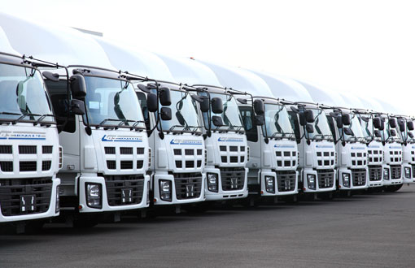

Full Truck Load
Charter satu truk untuk muatan yang membutuhkan ruang, jadwal, dan perjalanan khusus.
Layanan pengiriman
Dari satu truk penuh hingga penggabungan muatan, pilih format pengiriman yang sesuai dengan kebutuhan bisnis Anda.
Format layanan
Tarif dapat berbasis ritase atau perjalanan, bergantung pada tujuan, proses bongkar-muat, dan jenis barang.
Charter satu truk untuk muatan yang membutuhkan ruang, jadwal, dan perjalanan khusus.
Penggabungan muatan untuk kebutuhan pengiriman yang lebih fleksibel dan efisien.
Pengiriman barang bisnis dan konsumen dengan penyesuaian terhadap karakter muatan.
Pilihan karoseri untuk kebutuhan perlindungan, kapasitas, dan akses bongkar-muat.
Untuk kebutuhan bisnis

Tim dapat membantu membahas pilihan armada dan format layanan sebelum pengiriman dijadwalkan.
Mulai percakapan
Ceritakan rute, jenis muatan, dan jadwal Anda. Kami bantu menyiapkan pilihan perjalanan.